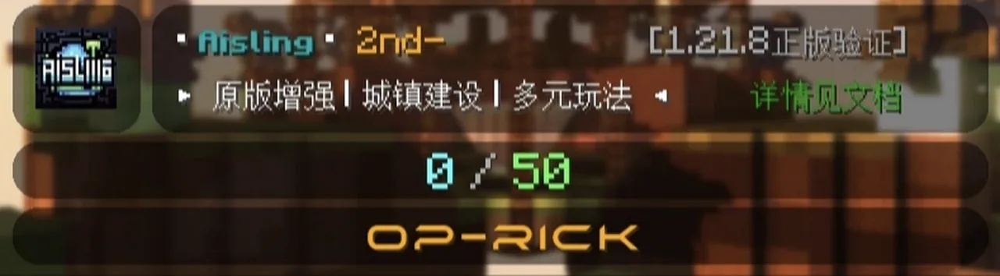
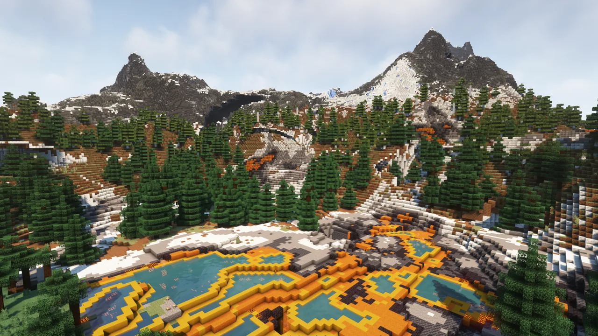
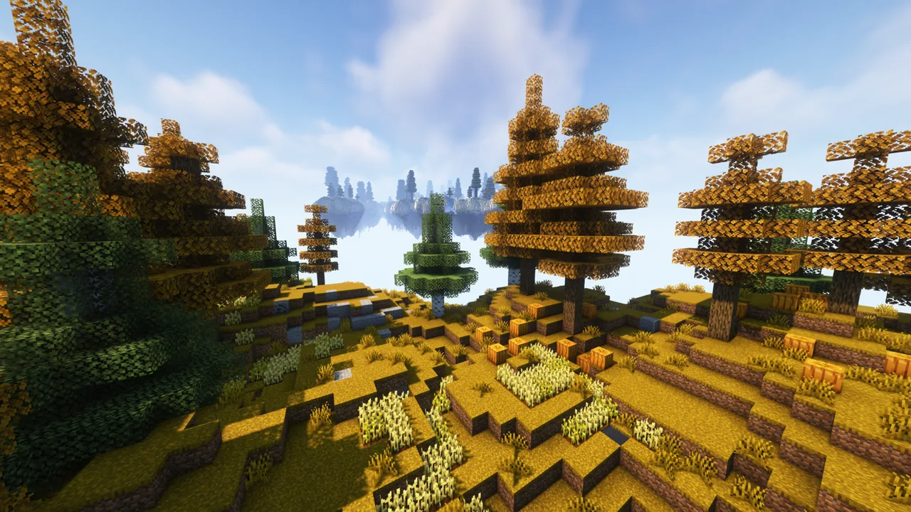
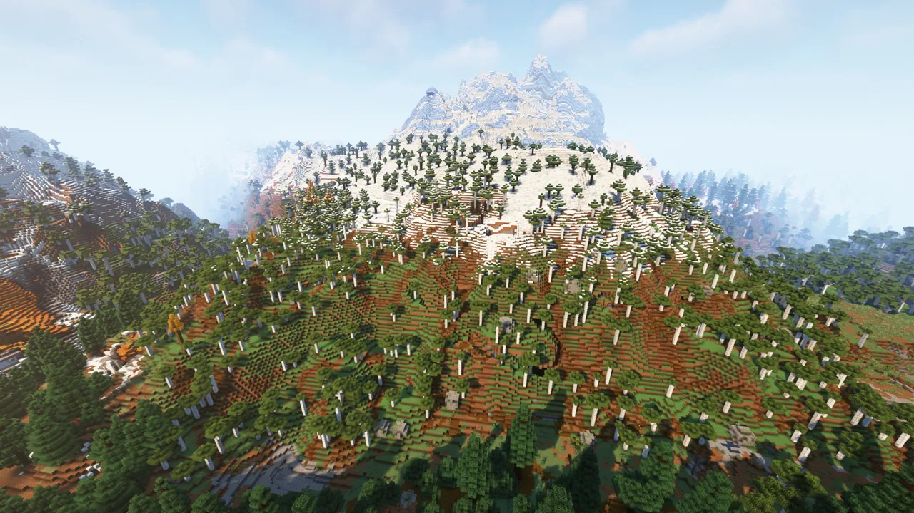
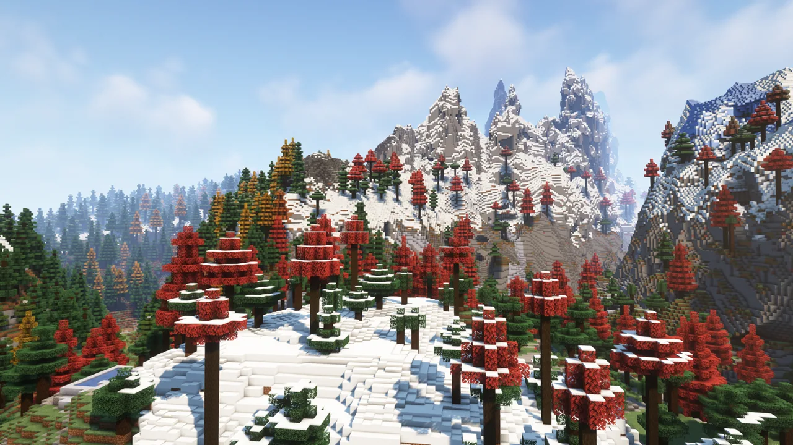
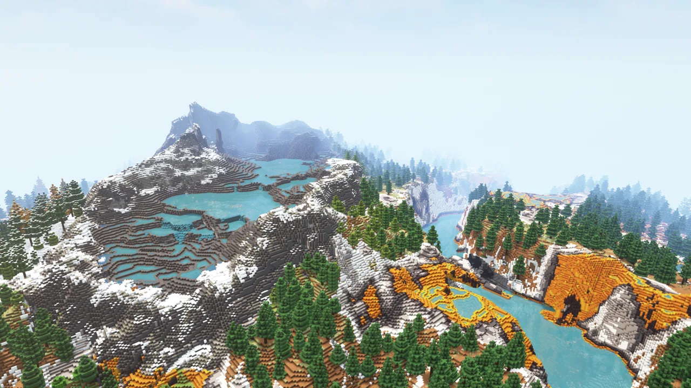
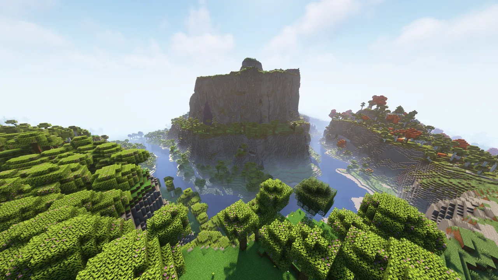
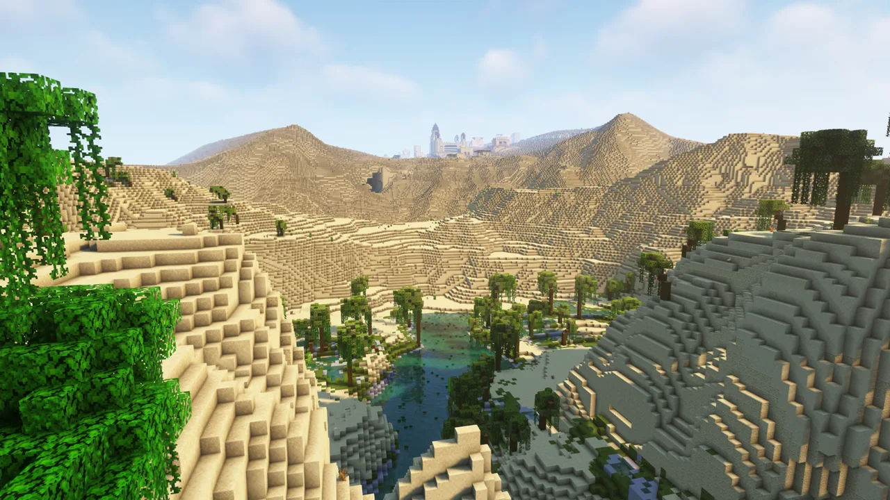
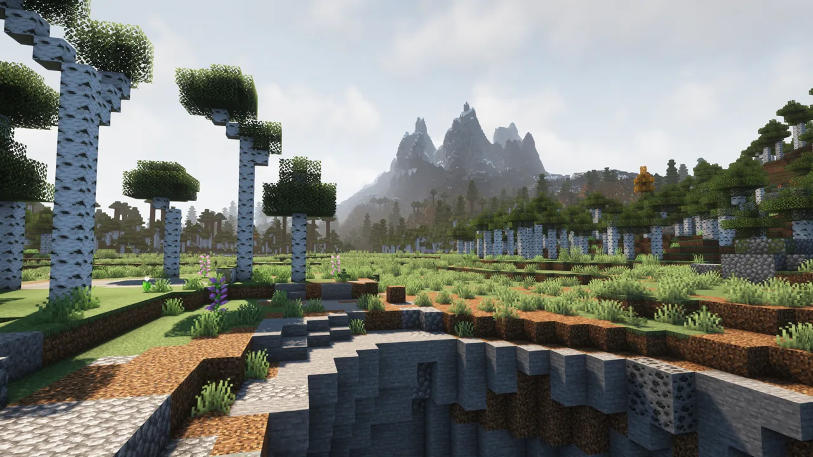
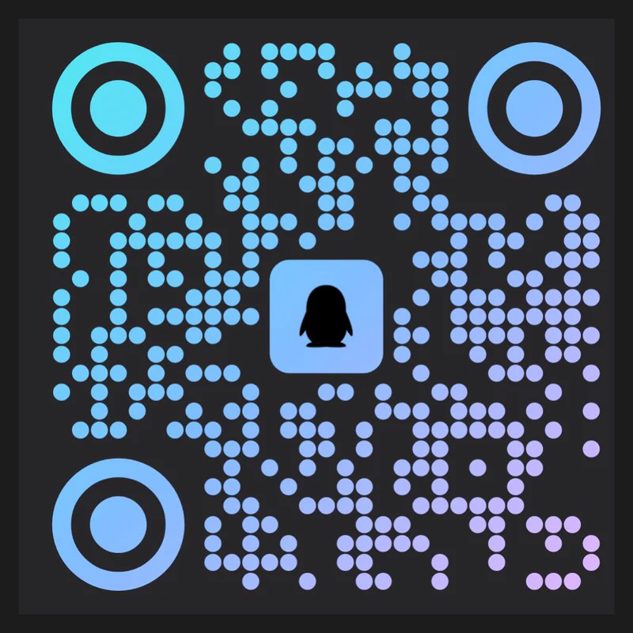

01 / ABOUT
什么是 Aisling？
原版增强 · 永不开荒重置 · 永不关服
Aisling 是一个由 Tu_village head 维护，自 2023 年 8 月 3 日开放的私人性质服务器。
本服务器定位为原版增强，养老的同时不缺乏探索精神。适合因学业繁忙，没有时间投入太多精力的老玩家。
当前正在从 Bukkit 插件服重构至 Fabric 模组服。
#原版增强
#轻度RPG
#Fabric 模组服
#养老友好
#永不关服

服务器 MOTD 截图
assets/img/f1bbcd9b075c.webp —— 已就位则自动显示
02 / FEATURES
核心玩法
四大方向撑起整个世界，从城镇到三界。
🏗
模块化城镇
建设你的专属模块化城镇。
抵御与反击凋灵暴君入侵。
最终目标：于末地击败凋灵暴君。
🏞
真实三界地形
主世界：基于原版的真实自然地貌。
下界：全面改造。
末地：地形去除单一化。
🌳
丰富的自然建筑
分布均匀，种类多样。
类型多样的回馈，满足你的探索欲。
⚔
PVE 增强
围绕凋灵暴君主线的战斗内容。
原版增强 · 技能与强化 · 更细致的进度体系。
03 / GALLERY
主世界掠影
Terralith 地形数据包下的主世界景观。








04 / GET STARTED
三步上手
从进群到定居，十分钟搞定。
join-qq-group 543231701
> 验证问题：文档
> [OK] 已进入群聊，公告区可查看最新 IP
connect <server-ip>
> Java Edition · 版本需匹配
> [OK] 连接成功，欢迎来到 Aisling
05 / ASSETS
素材待补充
等服主提供后放进对应文件名即自动显示，无需改代码。

① 首屏大图 / 宣传图
assets/img/home-hero.webp
② 服务器 Logo（方形）
assets/img/home-logo.webp

③ QQ 群二维码
assets/img/home-qr.webp